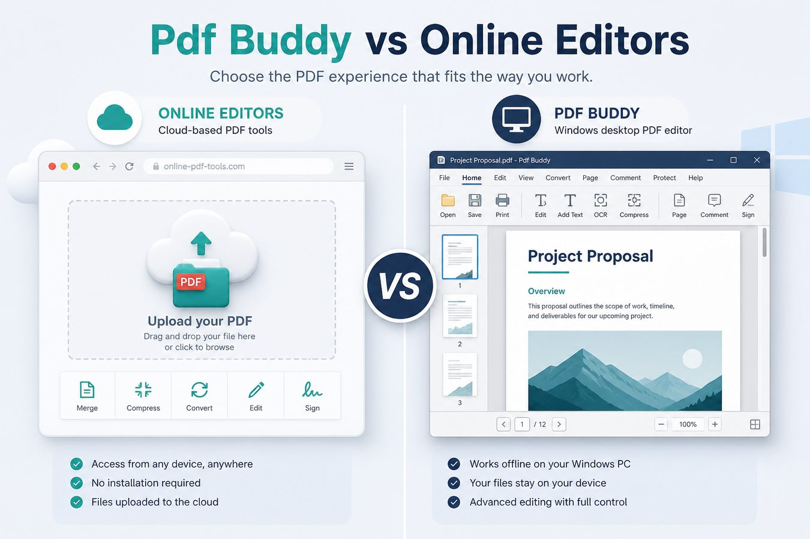
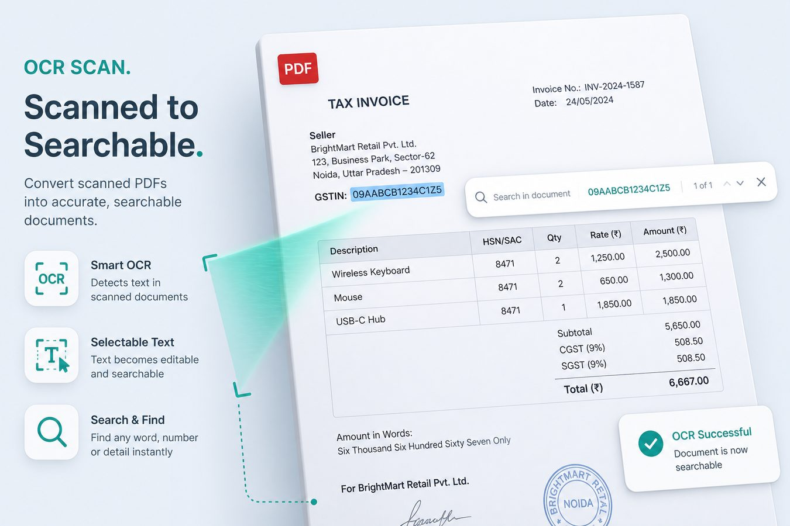
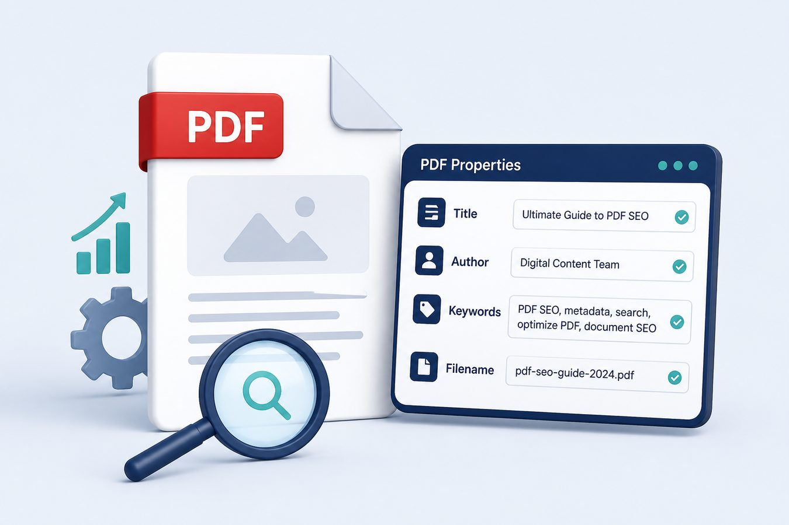
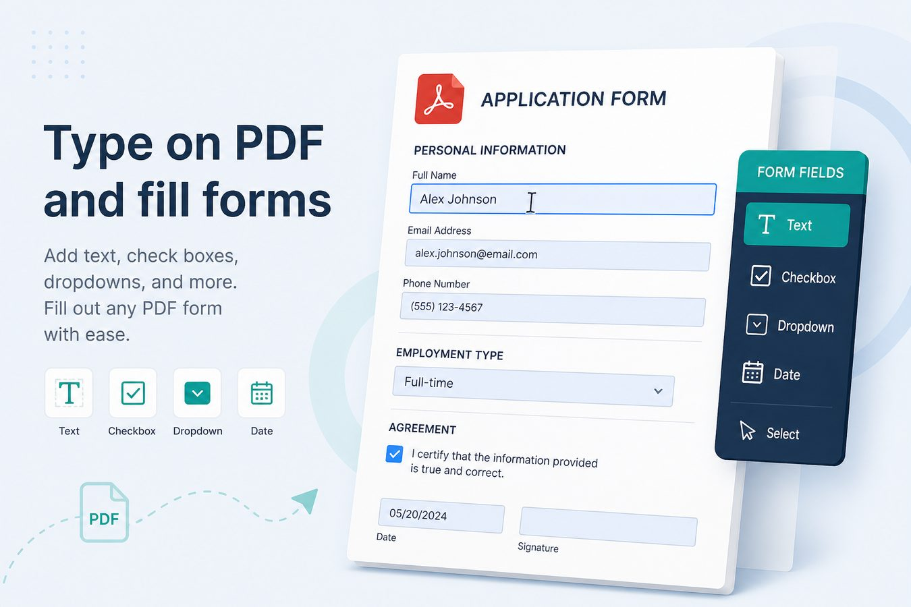
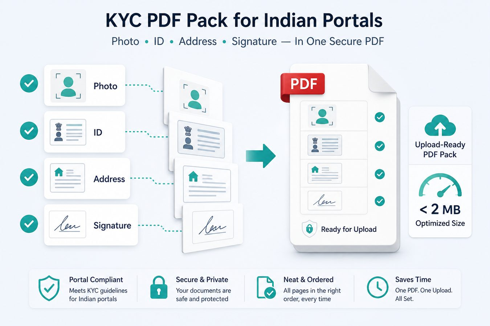
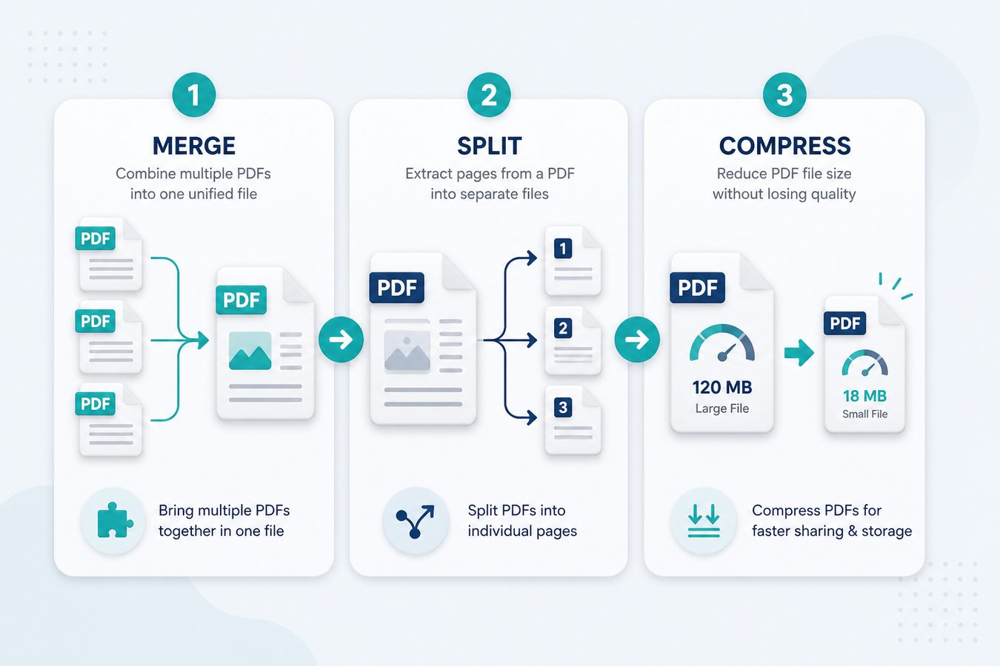

Home / Blog
PDF editor blog — guides & SEO tips
Practical articles on merge, split, compress, sign, OCR, privacy, and how we differ from iLovePDF / Smallpdf / Sejda / pdfFiller.

Merge Aadhaar, PAN & salary slip into one KYC PDF (locally)
Banks and NBFCs want one KYC pack. How to merge Aadhaar, PAN, and salary slips on Windows without uploading IDs to a random online editor.

Image to PDF for Indian portal uploads (size + clarity)
Portals reject heavy JPGs and unreadable scans. Convert images to PDF on Windows, keep stamps readable, and hit common KB/MB limits.

Split bank statement PDF pages before you upload
Portals rarely want a 40-page passbook PDF. Split the pages you need, keep the rest offline, and avoid uploading full statements to random tools.

Cover sensitive lines on a PDF before you share it
Sharing a statement or ID scan? Cover Aadhaar digits, account numbers, and addresses locally on Windows before email or WhatsApp.

PDF size limits for EPFO, bank & gov portals (practical compress)
Common Indian portal caps sit around 500KB–2MB. A local compress checklist that keeps text readable for verification teams.

Offline Windows PDF editor vs in-browser “no upload” tools
Browser WebAssembly tools can stay on-device — but a desktop app still wins for daily KYC packs, batch compress, and working without the tab dying.
Cheap Adobe Acrobat alternative for India (honest take)
When Pdf Buddy at ₹299/year beats Acrobat for KYC packs, WhatsApp compress, and offline edit — and when you still need Acrobat or a DSC.

Aadhaar & KYC PDFs: do not upload to random editors
Why Aadhaar, PAN, and bank statement PDFs should stay on your PC — and how a local Windows PDF editor fits Indian KYC packs.
Merge GST invoice PDFs for CA / portal packs
How Indian freelancers and SMEs merge monthly GST invoice PDFs, compress the pack, and keep files offline on Windows.

College admission PDF checklist (India portals)
Photo, ID, marksheet, signature — merge and compress under common Indian admission portal limits without uploading to random sites.
Easy Peeze Tools: Pdf Buddy + Kharch Log under one brand
What Easy Peeze Tools is, how Pdf Buddy and Kharch Log fit together, and who each app is for — students, freelancers, SMEs in India.
Rotate PDF pages on Windows before you merge
Fix sideways phone-scan PDFs on Windows before merge or portal upload. Why orientation matters for KYC and college forms.

Password-protect a PDF before you email it
When to lock a PDF with a password on Windows, how unlock differs, and why you should not use random online unlock sites on files you own.
WhatsApp PDF size limits: compress without wrecking text
How to compress PDFs for WhatsApp and Indian portals so invoices and KYC packs stay readable under common MB caps.

Make a scanned PDF searchable with OCR
Turn image-only scans into searchable PDFs with OCR on Windows. Pdf Buddy OCR for invoices and photocopies.

PDF SEO: metadata, filenames, and landing pages
How to optimize PDFs for Google: title/subject/keywords metadata, hyphenated filenames, and HTML landing pages that outrank raw PDFs.
Why upload-based online PDF editors are risky
Privacy risks of free online PDF editors. Prefer a local Windows PDF editor for ID proofs, bank statements, and contracts.
Pdf Buddy vs iLovePDF, Smallpdf, Sejda & pdfFiller
When to use a local Windows PDF editor instead of iLovePDF, Smallpdf, Sejda, or pdfFiller — India pricing, privacy, and portal uploads.

Type on a PDF and fill forms on Windows (without Acrobat)
How to type on a PDF, fill AcroForm fields, and overlay text on scans using a desktop editor — plus when you still need Acrobat or a cloud form tool.

Build a PDF pack that Indian portals will actually accept
Checklist for GST, college, bank, and job portals: page order, MB limits, orientation, OCR, and filenames — using a local Windows PDF editor.

How to merge, split, and compress PDFs on Windows
Step-by-step guide to merge PDF, split PDF pages, and compress PDF size for email and portals — without uploading files.

Sign a PDF without Adobe Acrobat Pro
eSign-style PDF signatures on Windows: draw or place a signature locally with Pdf Buddy — no Acrobat subscription.
Best PDF editor for Windows in India (2026)
Compare Adobe Acrobat, free online PDF editors, and desktop apps. Why Pdf Buddy by Easy Peeze Tools fits Indian students and SMEs.